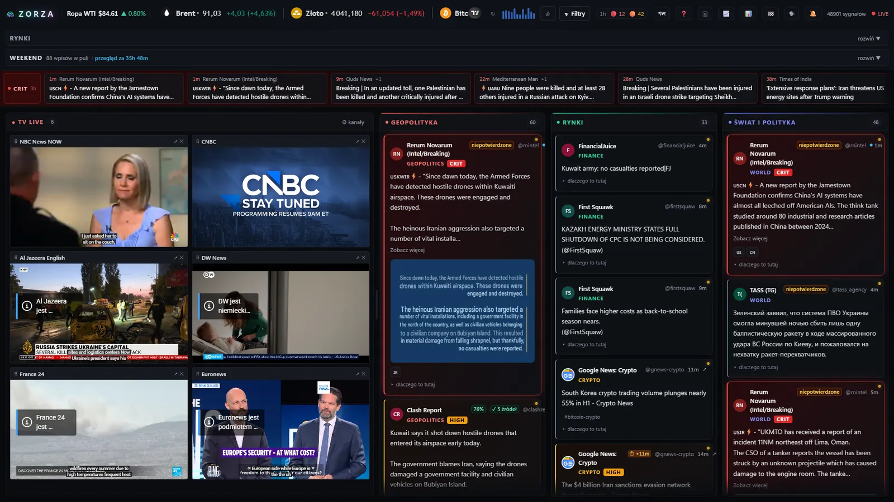
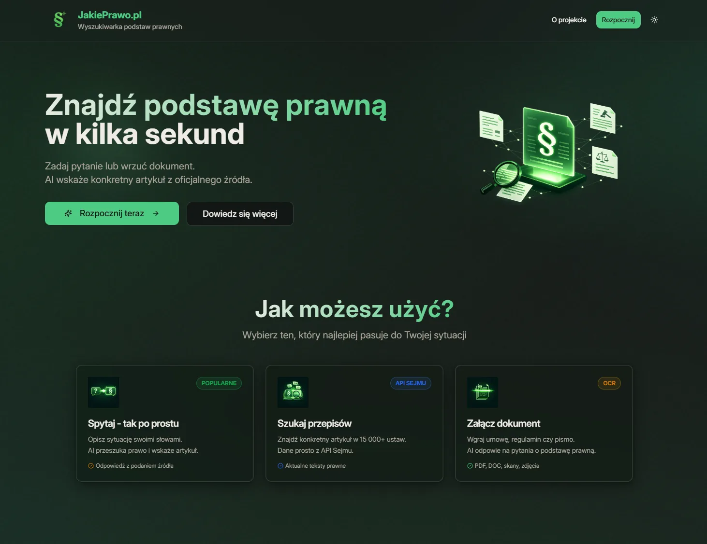
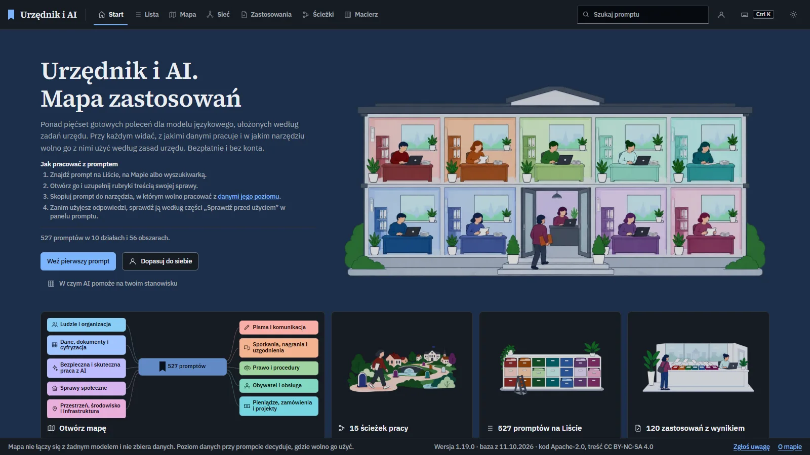
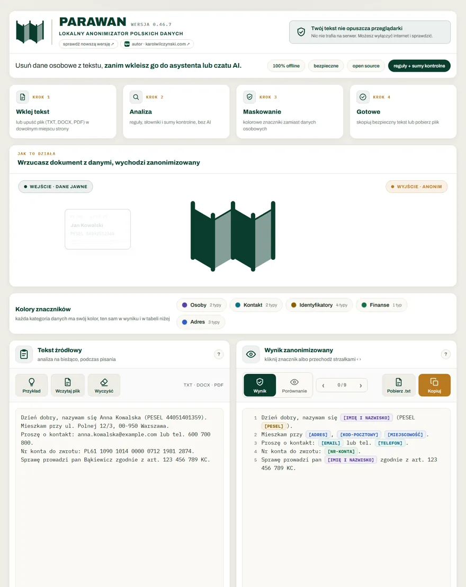
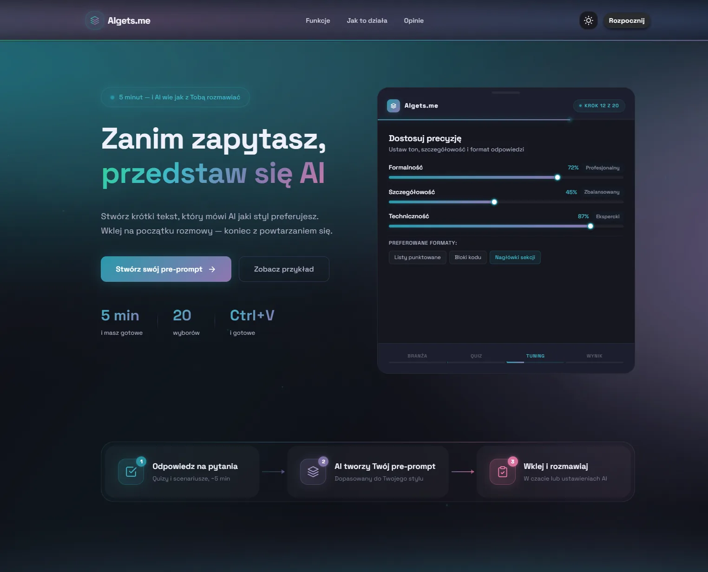
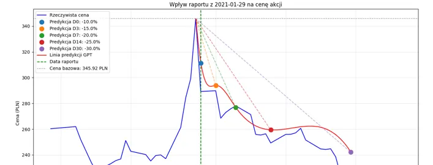
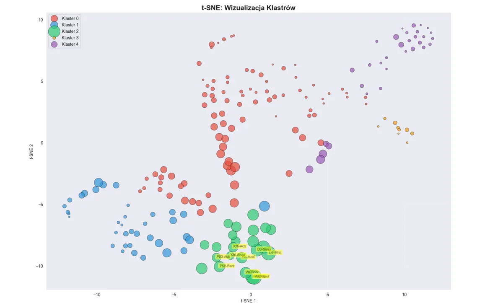
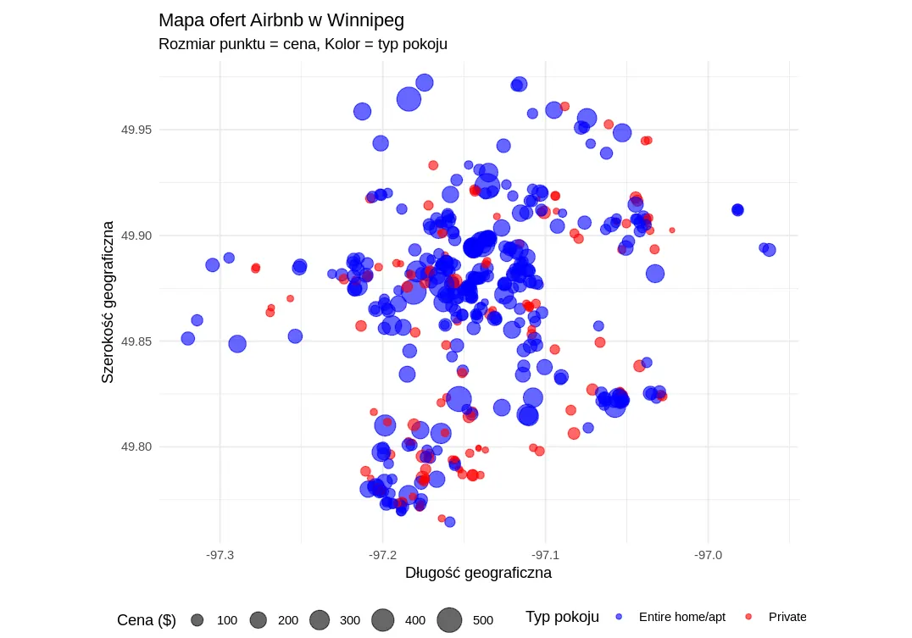
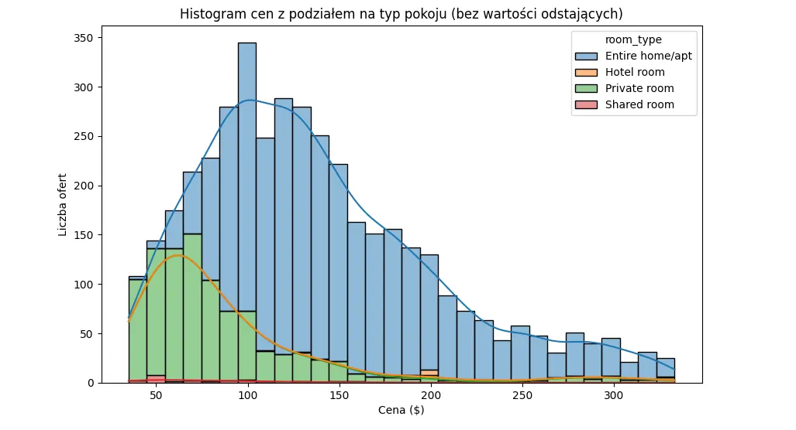
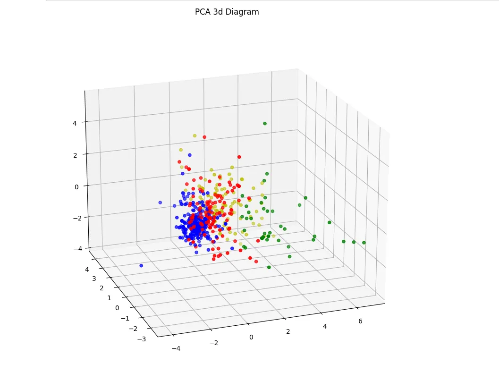

Zorza
Nasłuch informacyjny w czasie rzeczywistym
Wiarygodność z jawnych reguł, nie z modelu: każdy wpis pokazuje ocenę i reguły, które ją ustaliły.
2,06 USD na dobę nasłuchu
Na żywoPracuję na styku AI, prawa i administracji publicznej — i sam buduję narzędzia, które to łączą.
Każdy kafel otwiera studium projektu: problem, decyzje i ich koszt, z liczbami z repozytorium.

Nasłuch informacyjny w czasie rzeczywistym
Wiarygodność z jawnych reguł, nie z modelu: każdy wpis pokazuje ocenę i reguły, które ją ustaliły.
2,06 USD na dobę nasłuchu
Na żywo
Wyszukiwarka polskiego prawa z AI · beta
Lepiej brak cytatu niż niewłaściwy przepis. Lokalny Bielik nie przeszedł progów spisanych przed ewaluacją, więc działa obok Claude’a, nie zamiast.
1200+ testów
Na żywo
Mapa zastosowań modeli językowych w administracji
Katalog dla urzędników, który sam niczego nie wysyła ani nie zapisuje: stan w adresie strony, publikacja tylko po zielonej bramce testów.
0 połączeń z modelem
Na żywo

Model wybiera tylko spośród okien policzonych przez deterministyczny rdzeń; slot to godzina na zegarze, nie „północ + 30 min”.
3342 testy
Na żywo
Przeglądarka rozmawia z bazą bezpośrednio, więc granicą bezpieczeństwa jest RLS; Claude działa tylko na żądanie.
49 / 49 tabel z RLS
Na żywo
Strażnik pokrycia wykrywa sklep, który po cichu przestał dostarczać ceny: zamiast po 7 dniach najpóźniej po 6 h.
9853 dzienne notowania
Na żywo
Kreator przycięty po przeglądzie; odpowiedzi trafiają do modelu jako dane, nie polecenia.
11 z 16 pytań zostało

2024Czy GPT-4o-mini, czytając komunikat ESPI, przewidzi reakcję kursu? Zbiór: 134 raporty Allegro i 1 050 sesji giełdowych (do 17 grudnia 2024); kod zestawia prognozę w 5 horyzontach z rzeczywistością, po jednym raporcie. Zapisany w repozytorium przebieg dotyczy jednego raportu CD Projekt. To ćwiczenie z zajęć, nie narzędzie ani porada inwestycyjna.

2025Co decyduje o sprzedaży gry? 16,6 tys. rekordów (11,5 tys. tytułów), z czego analiza obejmuje 12,4 tys. z lat 1980–2010: segmenty K-Means i model RandomForest, który na danych testowych wyjaśnia ok. ¼ zmienności sprzedaży (R² 0,25 w skali logarytmicznej).

20251 626 ofert Airbnb i pełen pipeline w R: od imputacji MICE po podział gospodarzy na 4 typy metodą k-means (k ustalone z góry). Do gospodarzy z więcej niż jedną ofertą należy 59,7% wszystkich ofert.

2024Co naprawdę napędza cenę najmu? 5 454 oferty Airbnb w Waszyngtonie: korelacje i miary związku zmiennych w Pythonie (V Craméra z chi-kwadrat, R² z OLS).

20248 378 obserwacji speed datingu i ~200 zmiennych. W opisie wyników: PCA + K-Means na 10 cechach, 3 segmenty (38/33/29%) pod kampanie; notebook w repozytorium to wersja z zajęć (6 cech, 4 skupienia).
Napisz, jeśli chcesz porozmawiać o projekcie, współpracy albo wystąpieniu — o tym, jak AI spotyka się z prawem i administracją.
Od paragrafu do parametru.